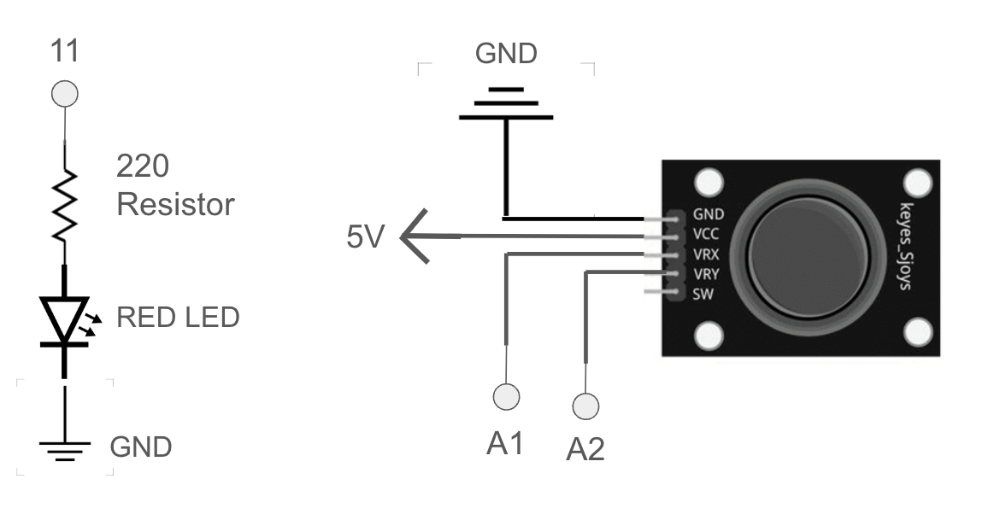

Circuit Gif

Circuit Image

Connected the joystick directly to the arduino for easier mobility use and the LED on the breadboard.
Schematic
Schematic of a red LED and joystick with resistors
Resistor Calculation
To calculate the resistor value for a red LED with a 1.8V voltage drop. Given that a LED should run at a 20mA current and the Arduino gives 5 volts. I used 220Ω resistors because it's the closest value greater than 160Ω.
V = I x R // Ohm's Law
V = V - Vf = 5 - 1.8 = 3.2 V
I = 20mA = 0.02A
R = V / I = 3.2V / 0.02A = 160Ω
p5.js Code
Part of this code is adapted from an p5.js example exercise: https://archive.p5js.org/examples/interaction-follow-3.html
const BAUD_RATE = 9600; // This matches the baud rate in your Arduino sketch
let port, connectBtn; // Declare global variables
// Snake size set up
let x = [], y = [],
segNum = 15,
segLength = 25;
// Begin snake in the middle of the screen
let joystickX = 508, joystickY = 513; // default variables for joystick (serial values when joystick is untouched)
function setup() {
setupSerial(); // Run our serial setup function (below)
// windowWidth and windowHeight are p5 variables
createCanvas(windowWidth, windowHeight); // create a canvas the size of my browser
// Set snake appearance: stroke weight and pink color with transparency
strokeWeight(25);
stroke(255, 105, 180, 150);
// Make sure the snake doesn't go off the screen
for (let i = 0; i < segNum; i++) {
x[i] = width;
y[i] = height;
}
}
function draw() {
const portIsOpen = checkPort(); // Check whether the port is open (see checkPort function below)
if (!portIsOpen) return; // If the port is not open, exit the draw loop
let str = port.readUntil("\n").trim(); // Read from the port until the newline
if (str.length == 0) return; // If we didn't read anything, return.
// Parse joystick serial data and convert to integers
if (str.length > 0) {
let values = str.split(",");
if (values.length === 2) {
joystickX = int(values[0]);
joystickY = int(values[1]);
}
}
// Map joystick values from 0–1023 (min-max readings) range to canvas width and height (min-max)
let mappedX = map(joystickX, 0, 1023, 0, width);
let mappedY = map(joystickY, 0, 1023, 0, height);
background(0); // Clear the canvas with a black background
dragSegment(0, mappedX, mappedY); // Move the snake's head based on mapped joystick input
// Move each segment to follow the previous one
for (let i = 0; i < x.length - 1; i++) {
dragSegment(i + 1, x[i], y[i]);
}
console.log(mappedX,mappedY) // I used this to debug and ensure that I was getting input data from the joystick
}
// code adapted from https://archive.p5js.org/examples/interaction-follow-3.html to give snake like animation effect
function dragSegment(i, xin, yin) {
const dx = xin - x[i];
const dy = yin - y[i];
const angle = atan2(dy, dx);
x[i] = xin - cos(angle) * segLength;
y[i] = yin - sin(angle) * segLength;
segment(x[i], y[i], angle);
}
function segment(x, y, a) {
push();
translate(x, y);
rotate(a);
line(0, 0, segLength, 0);
pop();
}
// Three helper functions for managing the serial connection (taken from in-class slides 9 and class github)
function setupSerial() {
port = createSerial();
// Check to see if there are any ports we have used previously
let usedPorts = usedSerialPorts();
if (usedPorts.length > 0) {
// If there are ports we've used, open the first one
port.open(usedPorts[0], BAUD_RATE);
}
// create a connect button
connectBtn = createButton("Connect to Arduino");
connectBtn.position(5, 5); // Position the button in the top left of the screen.
connectBtn.mouseClicked(onConnectButtonClicked); // When the button is clicked, run the onConnectButtonClicked function
}
function checkPort() {
if (!port.opened()) {
// If the port is not open, change button text
connectBtn.html("Connect to Arduino");
// Set background to gray
background("gray");
return false;
} else {
// Otherwise we are connected
connectBtn.html("Disconnect");
return true;
}
}
function onConnectButtonClicked() {
// When the connect button is clicked
if (!port.opened()) {
// If the port is not opened, we open it
port.open(BAUD_RATE);
} else {
// Otherwise, we close it!
port.close();
}
}
// If any key pressed, send data to Arduino to control red LED
function keyPressed() {
port.write(key); // Send pressed key as data
console.log(key); // Log the key press to be interpreted in ardunio firmware
}
Arduino Code
int redLED = 11; // red LED to pin 11
void setup() {
Serial.begin(9600); // set up serial
pinMode(redLED, OUTPUT); // initalize red LED as an output
Serial.setTimeout(10); // set the timeout for parseInt (good practice)
}
void loop() {
int joyX = analogRead(A1); // Read joystick X position
int joyY = analogRead(A2); // // Read joystick Y position
// Send joystick data as a comma-separated string (e.g, "512,480")
Serial.print(joyX);
Serial.print(",");
Serial.print(joyY);
Serial.println();
delay(100); // Small delay to prevent excessive serial data transmission
if (Serial.available() > 0) { // if there's serial data
int inByte = Serial.read(); // read it
Serial.write(inByte); // send it back out as raw binary data
if (inByte == 32) { // If the received byte corresponds to ASCII 32 (spacebar key)
analogWrite(redLED, 255); // turn red LED fully on
}
else {
analogWrite(redLED, 0); // do not turn on LED if space button is not pressed
}
}
}